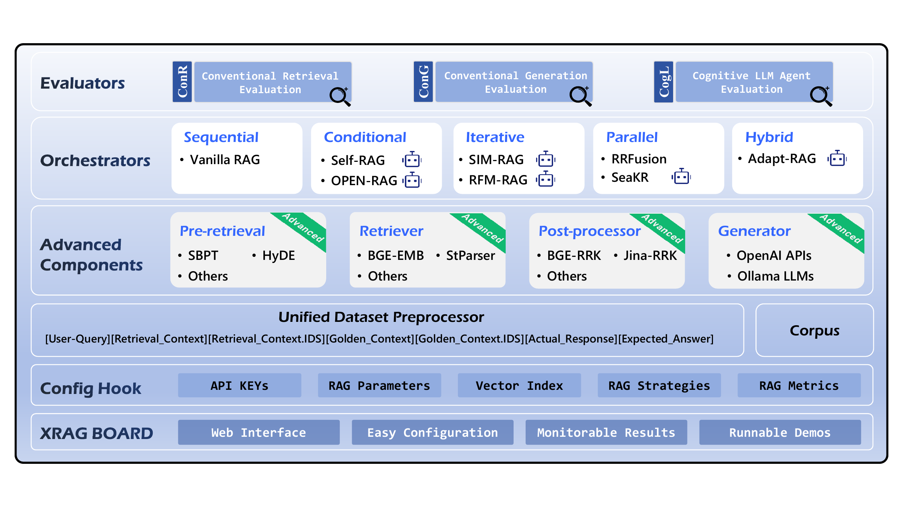
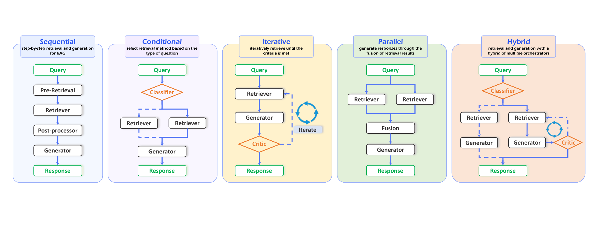
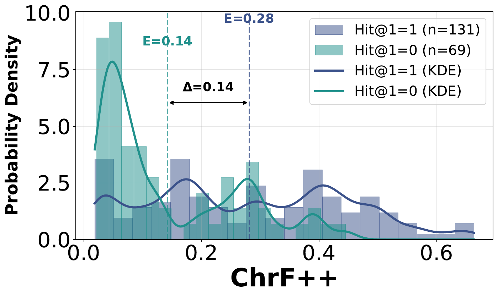
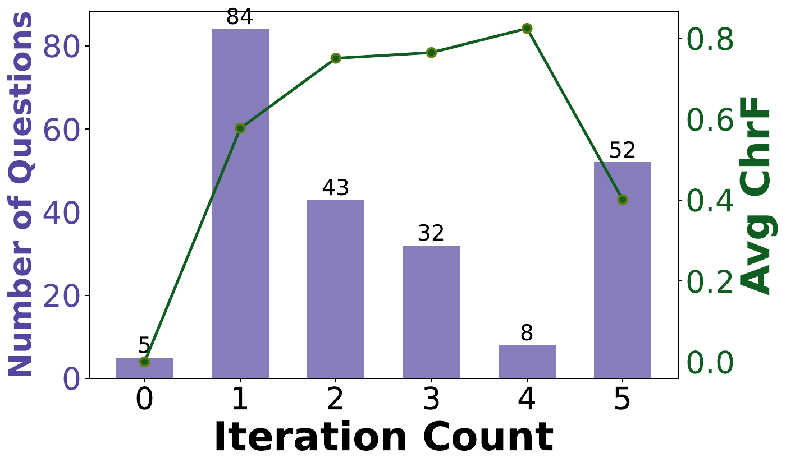
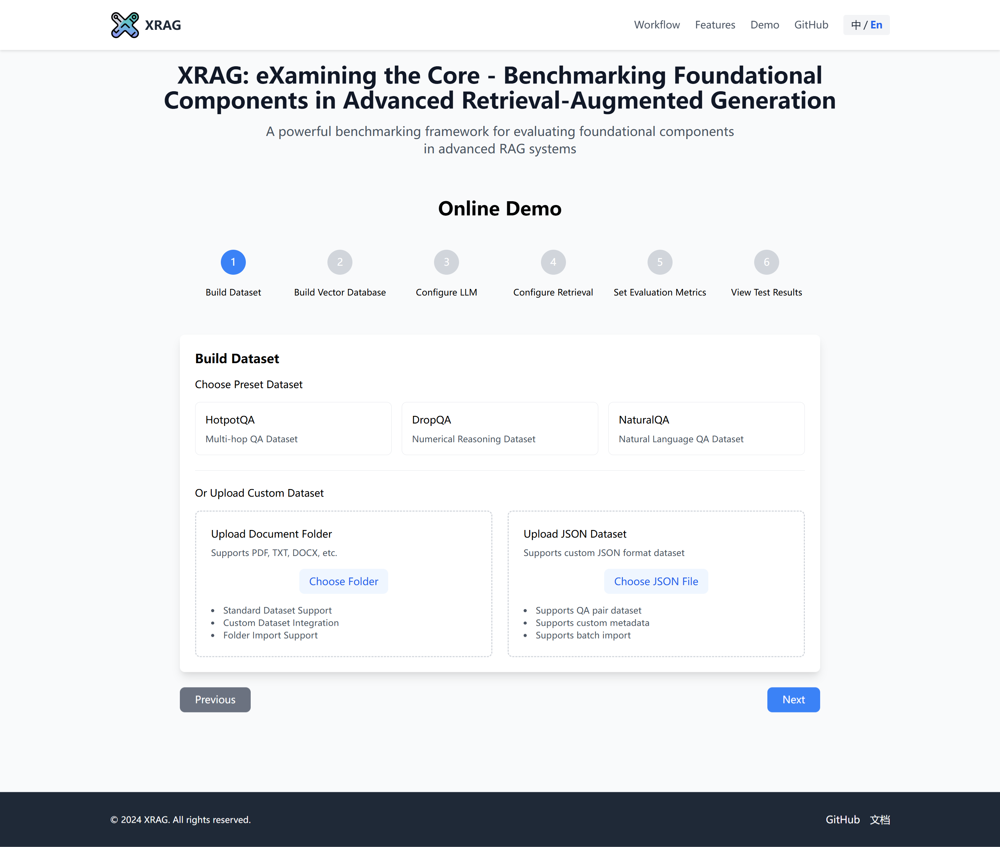

Pre-retrieval
Prepare the query
Examine query transformations such as Step-back Prompting and HyDE before searching the corpus.
ICDE 2026 · Experiment, Analysis, and Benchmark
Benchmarking Foundational Components
in Advanced Retrieval-Augmented Generation
Understand the components behind the answer.
Compare modules. Compose workflows. Evaluate retrieval and generation together.
01 / The idea
XRAG opens up the pipeline so researchers can examine which components, workflows, and data characteristics shape the final answer.
Retrieval-augmented generation (RAG) synergizes the retrieval of pertinent database with the generative capabilities of Large Language Models (LLMs), ensuring that the generated output is contextually relevant but also accurate and current. We introduce XRAG, an open-source, modular codebase that facilitates exhaustive evaluation of the performance of foundational components of advanced RAG modules.
These components are categorized into four core phases: pre-retrieval, retrieval, post-retrieval, and generation. We systematically analyze them across reconfigured datasets, providing a comprehensive benchmark for their effectiveness. These components can be combined in different ways through an orchestrator, of which there are five types: sequential, conditional, iterative, parallel, and hybrid. Our work thoroughly evaluates the performance of advanced core components in RAG systems, offering actionable insights for optimizing RAG architectures in dataset-driven AI applications.
From query preparation
to answer generation
Sequential, conditional, iterative,
parallel, and hybrid
7 retrieval · 10 generation
23 LLM-based metrics
Four unified benchmarks: HotpotQA, DropQA, NaturalQA, and FinanceBench. Coverage and metric counts follow Tables I–II in the paper.
02 / The framework
A final answer score cannot tell you whether the bottleneck lies in retrieval, context processing, or generation. XRAG makes each stage available for controlled comparison.

Prepare the query
Examine query transformations such as Step-back Prompting and HyDE before searching the corpus.
Find the evidence
Compare BGE and JINA retrievers with methods such as reciprocal rank fusion and sentence-window retrieval.
Refine the context
Assess BGE and JINA rerankers to prioritize useful evidence before it reaches the generator.
Produce the answer
Evaluate open and closed LLMs through local deployment and API-based generation interfaces.
From modules to agentic workflows
Orchestrators control the flow of retrieval and generation: run a sequence, select a branch, iterate, combine parallel results, or mix these strategies.

03 / The evidence
A shared benchmark reveals how orchestration changes answer quality, and why retrieving relevant evidence is only part of the story.
Table XI · DeepSeek-R1-Distill-Llama-70B generator
| Method | Orchestrator | ChrF ↑ | METEOR ↑ | ROUGE-L ↑ |
|---|---|---|---|---|
| BGE-Large | Sequential | 26.06 | 31.08 | 17.17 |
| Self-RAG | Conditional | 17.26 | 13.00 | 11.72 |
| SIM-RAG | Iterative | 62.30 | 52.39 | 65.48 |
| RRFusion | Parallel | 23.14 | 25.47 | 24.59 |
| Adapt-RAG | Hybrid | 31.20 | 33.56 | 23.17 |
| Method | Orchestrator | ChrF ↑ | METEOR ↑ | ROUGE-L ↑ |
|---|---|---|---|---|
| BGE-Large | Sequential | 19.82 | 19.14 | 11.20 |
| Self-RAG | Conditional | 11.98 | 7.87 | 6.09 |
| SIM-RAG | Iterative | 21.12 | 15.81 | 21.92 |
| RRFusion | Parallel | 18.83 | 15.67 | 10.91 |
| Adapt-RAG | Hybrid | 19.97 | 18.07 | 12.16 |
Selected generation metrics from the paper’s benchmark. Bold marks the best score in each column. Switch datasets to compare the same five orchestration strategies.
On HotpotQA, the iterative SIM-RAG configuration reaches 52.39 METEOR, compared with 31.08 for the sequential BGE-Large configuration. On FinanceBench, the best method depends on the metric: a single orchestration choice does not lead every column.
Explore the complete results

04 / The open-source toolkit
Configure the data, choose the components, and inspect the results through XRAG’s command-line tools and Web UI.

05 / Cite this work
If you find XRAG useful, please consider citing our paper.
@misc{zhang2026xragexaminingcore,
title={{XRAG: eXamining the Core -- Benchmarking Foundational Components in Advanced Retrieval-Augmented Generation}},
author={Qili Zhang and Qianren Mao and Yangyifei Luo and Yashuo Luo and Hanwen Hao and Zhilong Cao and Weifeng Jiang and Zhijun Chen and Junnan Liu and Feng Yan and Xiaolong Wang and Jinlong Zhang and Zhenting Huang and Zhixing Tan and Jie Sun and Bo Li and Jianxin Li and Philip S. Yu},
year={2026},
eprint={2412.15529},
archivePrefix={arXiv},
primaryClass={cs.CL},
url={https://arxiv.org/abs/2412.15529}
}